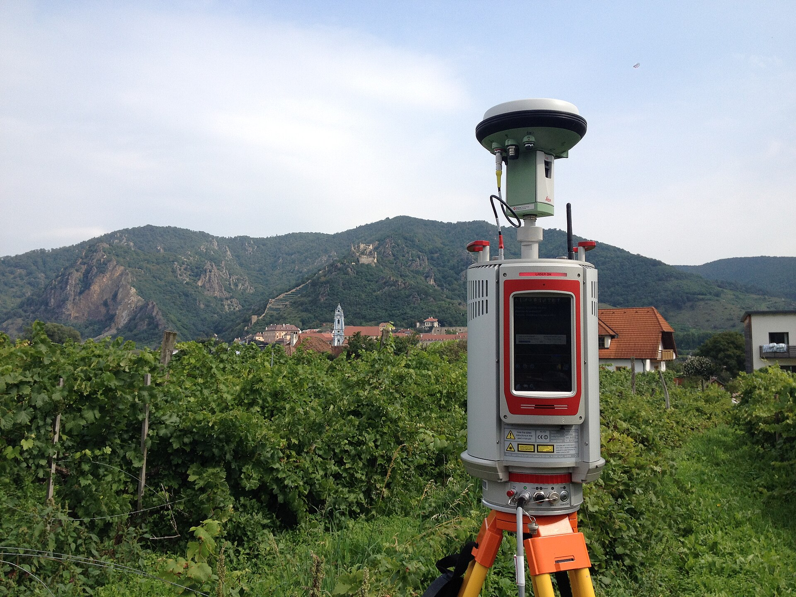
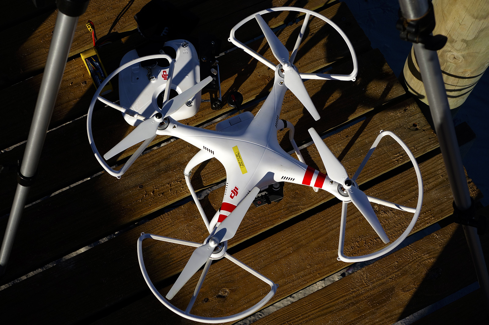
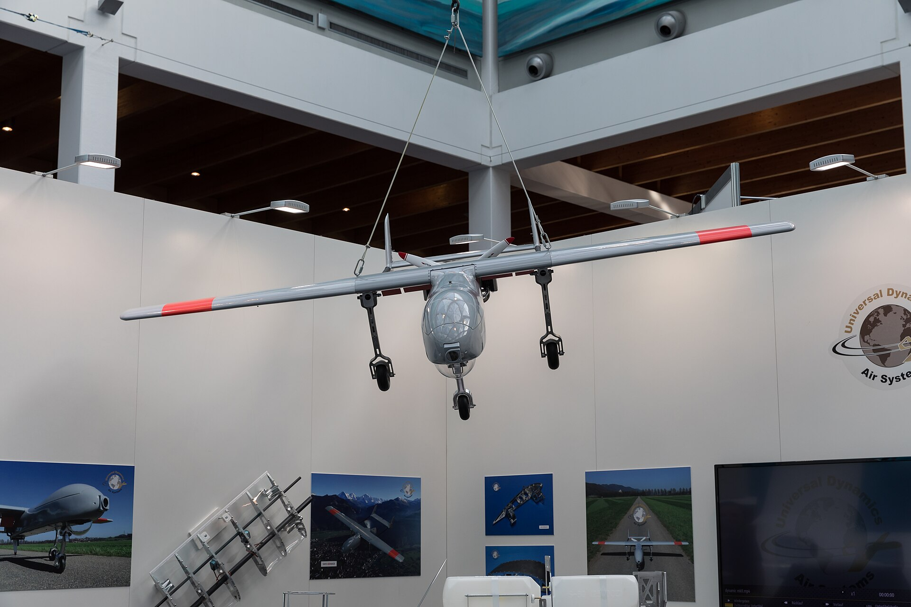
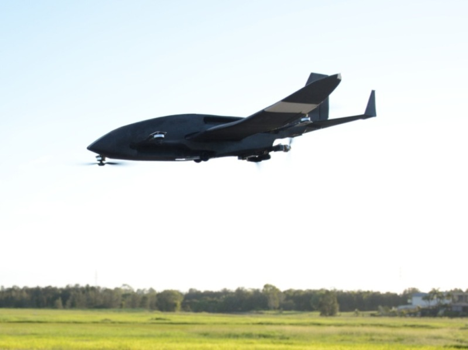

Remote and Emerging
Technologies
Field mensuration remains the foundation. Remote technologies extend field measurements across space and time.
Royal University of Bhutan
+ GIS + responsible data practice
Remote data need field meaning
Unit XI
- Passive/active sensing and four kinds of resolution.
- Satellite mapping, classification, change detection and validation.
- UAV imagery, orthomosaics, photogrammetry and ground control.
- LiDAR pulses, returns, point clouds and canopy-height models.
- Which technology matches a management question and scale.
- What field reference data are needed.
- Which limitations prevent a claimed output.
- How GIS, cloud databases, AI and sensors integrate responsibly.
- How to complete the Integrated Practical 13 project.
Introduction to remote sensing
Acquire information about a forest without touching every object, by measuring reflected or emitted energy from a distance.
Listen to available energy—or send a signal
Unit XI
Measures naturally available reflected sunlight or emitted thermal energy. Examples: optical/multispectral satellite and RGB UAV imagery.
Sensor emits energy and measures the return. Examples: LiDAR laser pulses and radar microwave signals.
“High resolution” is not one thing
Unit XI
Ground area represented by a pixel or sampling footprint. Finer pixels can show smaller features but do not guarantee classification accuracy.
Number, width and placement of wavelength bands. More/narrower bands can separate materials with distinct responses.
How often the same area is observed. Important for seasonal conditions, disturbance and monitoring.
Sensitivity to differences in recorded energy, commonly expressed by bit depth and usable signal range.
Choose resolution for the question: a national forest-cover trend, one harvest gap and one tree crown require different data.
Observe patterns field crews cannot measure everywhere
Unit XI
Forest/non-forest mapping, canopy-cover classes, fragmentation and access planning.
Fire scars, storm damage, harvest openings, insect/disease signals and regeneration patterns.
Canopy height, crown texture, vertical profile, gaps and terrain—especially with LiDAR or photogrammetry.
Compare compatible dates to locate possible gain, loss or degradation for field follow-up.
Stratification, frame improvement, accessibility planning and model-assisted estimation.
Extend field-calibrated biomass or habitat relationships spatially, with independent validation.
Satellite-based forest measurement
Consistent, repeated landscape observations are powerful when the pixel, date, terrain and field reference data match the question.
Classification assigns each pixel a meaningful class
Unit XI
Map categories based on a clear forest definition and minimum mapping unit. “Green” is not automatically forest.
Forest: land spanning more than 0.5 ha, trees exceeding 5 m in height, and canopy cover of more than 10 per cent — all three criteria must be met.
High forest (FNCA 2023): canopy cover 40 per cent and more, for trees grown by natural seedling or plantation of economic value and social benefit.
Field procedure: the Forest Canopy Cover Assessment Guidelines 2024 (FMID, DoFPS). A satellite canopy-cover class is not a substitute for that field assessment.
One pixel may combine tree crown, soil, shadow, road and understory; classification then represents a mixture.
Map legend, forest definition, spatial resolution and reference date are part of the result—not technical footnotes.
Compare like with like, then investigate change
Unit XI
Use comparable sensors/seasons, geometric alignment, cloud/shadow masks and a stated threshold. Candidate change requires interpretation and validation.
Spectral changes can delineate burned or disturbed areas and guide field assessment. Severity, cause and ecological effect need suitable indices, dates and field evidence.
A field plot measured months or years from the image may describe a different forest condition.
Training teaches the model; validation tests it independently
Unit XI
Plots or interpreted samples with known class/attribute used to develop classification rules or statistical/AI models.
- Geographically representative
- Compatible definitions and dates
- Accurate locations and adequate plot/footprint match
- Clear code and quality status
Separate reference observations used to test how well the finished map/model performs on data it did not fit.
- Probability-based where area estimates are required
- Report class-specific omission/commission or regression error
- Document sample size, design and uncertainty
- Do not validate only in easy/accessible locations
Mountain forests challenge the pixel
Unit XI
Cloud and haze obscure optical imagery; cloud shadow may resemble disturbance. Radar may observe through cloud but has different interpretation challenges.
Slope, aspect and mountain shadow change illumination and visible area. Geometric displacement and terrain correction matter.
Mixed pixels and minimum mapping units can hide narrow riparian forest, small gaps or isolated trees.
Different species/conditions may look similar; the same forest can look different by season, moisture and illumination.
Image and field dates may mismatch; phenology or management can create apparent change.
Canopy signal does not directly reveal every stem, understory tree, defect, species or merchantable volume.
Documented Bhutan example: for forest-area treatment of inaccessible Second NFI clusters, the Forest Type Map of Bhutan 2022 and Land Use and Land Cover Map 2016 were overlaid in QGIS. Classes were checked with high-resolution Google Earth imagery, Open Foris Collect Earth and consultation with field offices/local experts. The report did not extend this procedure to other quantitative parameters because doing so could introduce error.
Drone / UAV applications
Very detailed, flexible local observations—balanced against flight planning, canopy occlusion, processing, safety, permissions and field validation.
Platform choice follows area, terrain and payload
Unit XI

AerialcamSA · CC BY-SA 4.0{kind=link}
Vertical take-off, hover and detailed small-site work. Generally shorter endurance and smaller area per flight.

Matti Blume · CC BY-SA 4.0.jpg){kind=link}
Efficient coverage of larger areas. Needs suitable launch/recovery and cannot hover.

Krossblade1 · CC BY-SA 3.0{kind=link}
Combines capabilities or carries specialized sensors such as multispectral or LiDAR payloads; higher cost/complexity.
Payload weight, endurance, wind tolerance, terrain following, take-off area, crew competence and lawful operation constrain the choice.
Overlapping photographs become a mapped surface
Unit XI
Red, green and blue photographs similar to human-visible colour.
Same feature appears in multiple images; sufficient forward/side overlap supports matching and 3D reconstruction.
Geometrically corrected mosaic intended for map-like viewing and measurement.
Surveyed/known ground points help georeference and assess positional quality; requirements depend on system and accuracy goal.
Lower altitude usually means finer ground sampling distance but smaller coverage and more images. Image resolution, accuracy and ecological information are related—but not interchangeable.
Detailed canopy observations for a defined local area
Unit XI
Delineate visible crowns or detect crown centres in suitable open/even canopies. Overlapping crowns, shadows and understory reduce reliability.
Photogrammetric canopy surface minus an appropriate ground surface. Dense canopy makes ground difficult to observe; an external terrain model may be needed.
Map gaps, storm/fire effects, crown discoloration, planting survival or harvest condition when spatial/spectral detail and timing match the signal.
GNSS-located plots and tree heights calibrate or validate UAV-derived height and crown products. Field dates should match flight conditions.
Exceptional detail, limited footprint
Unit XI
- Very fine spatial detail for local sites.
- Flexible timing under suitable conditions.
- Repeatable imagery for restoration or disturbance monitoring.
- Orthomosaic, surface model and point-cloud products from one survey.
- Can reduce exposure to some inaccessible terrain—without removing field needs.
- Weather, wind, lighting and battery/endurance.
- Limited area and substantial image/data-processing volume.
- Canopy hides understory and sometimes ground.
- Geometric error without good positioning/control.
- Occlusion, shadow and similar crowns affect detection.
- Training, maintenance, permissions and cost.
A beautiful orthomosaic can still be poorly located, temporally mismatched or ecologically misinterpreted. Inspect metadata, control error and validation—not appearance alone.
A forest survey never justifies unsafe or unlawful flight
Unit XI
BCAA’s current Drone FAQ states that operation is permitted only for government organizations for government purposes; private individuals and companies are not eligible to own or operate drones under the cited UAS Regulation 2017.
An eligible organization must register the drone and obtain an Unmanned Aircraft Operation Permit before flight. The application includes the required forms/undertaking, evidence of operator competence and applicable fees.
Depending on the site, the current FAQ identifies clearances from MoHA for heritage/archaeological sites, DoFPS for protected areas/parks/wildlife sanctuaries, RBP for security-sensitive sites, RBA for designated no-fly zones, and others required by BCAA.
Use an authorized competent crew; assess airspace, people, wildlife, terrain, wind/weather, take-off/recovery and lost-link/emergency actions; follow every permit condition; stop when control, visibility or authorization is doubtful; retain the flight log.
Minimize capture of people, homes and sensitive sites; secure imagery, coordinates and credentials; respect community data and land/resource permissions; minimize noise and wildlife disturbance.
Verified 8 August 2026: students should not plan an independent practical flight. Any teaching or research flight must sit within an eligible government organization’s registered, permitted and site-cleared operation. Requirements can change—recheck BCAA before each operation.
LiDAR
Active laser ranging creates three-dimensional point clouds from many pulse returns—revealing canopy and terrain structure that photographs alone may not provide.
Pulse travel time becomes a 3D point
Unit XI
The sensor emits laser pulses, measures returned energy and travel time, and combines ranging with position/orientation to calculate 3D points.
A pulse may interact with upper canopy, lower vegetation and ground. Return pattern depends on sensor, footprint, canopy and viewing geometry; not every pulse reaches the ground.
Different viewpoints reveal different structure
Unit XI
Sensor on aircraft/UAV scans stands or landscapes from above. Strong for canopy surface, terrain gaps and wall-to-wall structural metrics across the flight area.
View: top-down · broad area
Tripod scanner records dense local 3D structure from fixed ground positions. Strong for stems and detailed plot structure, with occlusion behind objects.
View: ground-based · detailed plot
Sensor moves on person, vehicle or platform. Rapid local capture but trajectory/positioning and changing viewpoint require careful processing.
View: moving · corridor/plot
Point cloud → surfaces → forest metrics
Unit XI
Terrain elevation, canopy height, gap distribution, vertical return profile and crown surface.
Tree height, stand density, crown dimensions and biomass can be predicted from LiDAR metrics with field calibration.
Canopy-height maps, access/terrain models, fuel/habitat structure and inventory stratification.
A CHM is a gridded height-above-ground product, not a perfect list of individual tree heights. Crowns overlap and raster cells summarize complex returns.
Three-dimensional data still contain blind spots
Unit XI
Sensors, flight/field operation, positioning systems, software and specialist staff can be expensive or unavailable.
Millions/billions of points demand storage, backup, metadata and substantial processing.
Leaves and stems block the view. Airborne data may miss understory; terrestrial scans miss objects behind stems.
Steep slopes, dense canopy and scanning angle affect ground classification and height estimates.
Noise removal, alignment, classification, gridding and tree-detection parameters change outputs.
Biomass, species, density and tree-level attributes still require appropriate field training and independent validation.
Archive raw data, processing settings, coordinate system, software/version and quality metrics so results can be reproduced.
Digital and precision forestry
Integrate field plots, remote observations, GIS, databases and models so each decision uses the right evidence at the right scale.
One forest, linked evidence layers
Unit XI
Species, DBH, height, defects, biomass/carbon and known observations at plots.
Stores and analyses georeferenced layers: plots, boundaries, roads, terrain, imagery and map outputs.
Satellite, UAV and LiDAR extend spatial/temporal coverage and support strata or prediction.
Central structured records, roles, versioning, validation, backup and controlled sharing.
Can support synchronized teams, scalable processing and shared dashboards. They also require reliable governance, access control, connectivity planning, costs, backup/export and exit strategy.
Weather stations, dendrometers, acoustic/camera systems and other connected devices can provide frequent observations. Calibration drift, power, connectivity, data volume and maintenance must be planned.
Integration depends on shared identifiers, coordinate systems, dates, definitions and metadata. Layers that merely overlap visually are not necessarily analytically compatible.
Automation assists judgement; it does not become truth
Unit XI
- Classify forest/non-forest or disturbance.
- Detect candidate crowns, stems or canopy gaps.
- Predict height/biomass from remote metrics.
- Flag anomalous records or sensor changes.
- Prioritize field visits—subject to transparent criteria.
Model output requires independent validation across relevant forest types, terrain and time.
- Biased, small or poorly labelled training data.
- Different sensor, season, region or forest condition.
- Location/date mismatch between labels and imagery.
- Hidden preprocessing or data leakage.
- Rare classes and inaccessible areas underrepresented.
- Output accepted because it “looks right”.
A forest question needs a combination of methods
Unit XI
A management unit contains steep mixed forest and recent wind damage. Managers need (1) a map of damaged canopy, (2) current standing volume and biomass by broad forest type, and (3) a repeatable five-year monitoring plan.
- List information needed.
- Choose methods and scale.
- Define expected outputs.
- Identify field training/validation data.
- State legal, safety, access and data limitations.
Stratified systematic fixed-area plots + GNSS/digital forms for volume/biomass; recent satellite data for wall-to-wall damage screening; UAV only for permitted priority sites; GIS integration; revisit permanent plots and repeat compatible imagery.
No single technology answers all three needs. Justify what each method contributes and what still requires field validation.
Question → design → field evidence
Unit XI
- Define inventory objective.
- Describe forest population.
- Select sampling method.
- Choose fixed-area plot size/shape.
- Prepare frame, codes, forms and field plan.
- Establish one or more plots.
- Record GNSS location where available.
- Document coordinate system and accuracy.
- Mark centre/boundary and enumerate systematically.
- Identify tree species.
- Measure diameter and height.
- Measure bark thickness where required.
- Measure crown characteristics.
- Record canopy/crown information where required.
- Record defects and remarks.
Submit a one-page protocol before analysis: objective, population, sample design, plot geometry, inclusion rules, variables/units, equipment checks, field safety and quality-control plan.
Clean → calculate → map → interpret and communicate
Unit XI
- Trees per hectare.
- Mean diameter and height.
- Basal area per hectare.
- Stand volume.
- Biomass and carbon stock.
- Enter and clean spreadsheet data.
- Prepare summary tables.
- Prepare appropriate graphs.
- Prepare a simple plot-location map where possible.
- Archive raw/cleaned data, dictionary and change log.
- Interpret results against objective.
- Identify limitations and uncertainty.
- Prepare concise technical inventory report.
- Present methods, results, limitations and recommendations.
Match the technology to the question and scale
Unit XI
- Resolution has spatial, spectral, temporal and radiometric dimensions.
- Satellite data provide repeat landscape coverage with scale/cloud/terrain limits.
- UAVs provide local detail with flight, processing and legal responsibilities.
- LiDAR measures 3D returns; forest attributes still need calibration.
- GIS integrates layers only when definitions, dates and CRS align.
- AI output is a model result, not unquestionable truth.
- Field mensuration anchors every defensible remote estimate.
Authoritative starting points for continued study
Unit XI
- FAO. National Forest Monitoring resources.
- DoFPS (2023). Second NFI, Volume I. Field inventory foundation and Bhutan’s QGIS/Collect Earth workflow for inaccessible plots.
- DoFPS (2024). Forest Canopy Cover Assessment Guidelines. Field canopy reference.
- USGS. LiDAR calibration and validation resources.
- USGS Interagency LiDAR Monitoring. What is LiDAR? Pulses, returns, point clouds, ALS and TLS.
- BCAA. Drone FAQ and UAS/Drone Regulation page, checked 8 August 2026. Current eligibility, registration, permit and clearance requirements.
- Congalton & Green (2019). Assessing the Accuracy of Remotely Sensed Data, 3rd ed. CRC Press.
- Jensen (2016). Introductory Digital Image Processing, 4th ed. Pearson.
- White et al. (2016). A best practices guide for generating forest inventory attributes from airborne laser scanning data. Forestry Chronicle 92:76–93.
- Use official manufacturer, software, aviation-authority and institutional documentation current at the time of each survey.
- See MEN 201 Units VIII–X for plot design, data quality and carbon-model documentation.
Test your understanding
Unit XI · Paper
The unit paper: full marks, time allowed and pass mark are printed on the sheet. Sign in, answer, submit once. Open the paper in its own tab